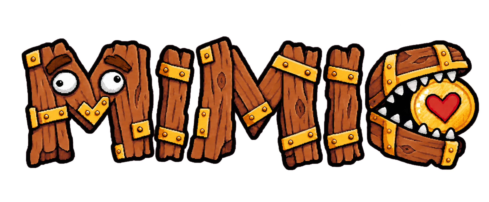
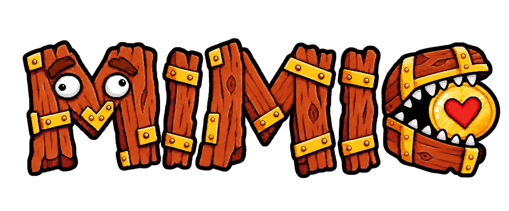

Wordmark V11 · 從 V9 小幅提高飽和度
直接以 V9 為基準，只做約 4–6% 的小幅飽和度提升。木材維持暖棕而不推向 V10 的橘紅，金屬與金幣只稍微增加鮮明度；造型、牙齒節奏、愛心金幣與像素線方向不主動改造。
Review-only：V10 保留作過高幅度對照；未取代 calibration，未加入 manifest、runtime 或產品頁。

飽和度幅度直接比對

直接以 V9 為基準，只做約 4–6% 的小幅飽和度提升。木材維持暖棕而不推向 V10 的橘紅，金屬與金幣只稍微增加鮮明度；造型、牙齒節奏、愛心金幣與像素線方向不主動改造。
Review-only：V10 保留作過高幅度對照；未取代 calibration，未加入 manifest、runtime 或產品頁。

